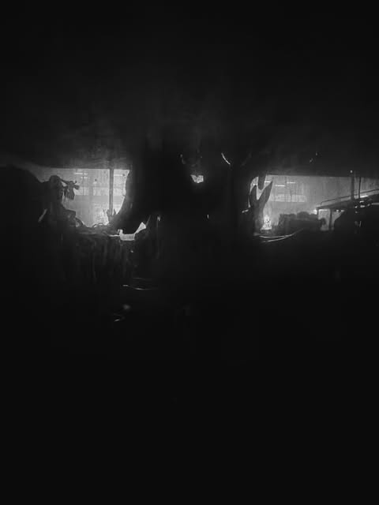

Photography commission
Enquire ↗Image for a place.
Architecture, hospitality, public space and portrait commissions by Ben Taleb: developed with a clear usage, production and delivery brief.
Domus Cultura / Work with us
We bring an editorial eye to commissioned image, art placement, cultural programmes and sound-led gatherings for spaces, people and brands with a real point of view.

01 / A considered brief
Every collaboration starts with place, audience and intention. We shape work that can live as an image, an edition, an event or a continuing relationship—without separating aesthetics from the practical conditions that make it happen.
02 / Ways of working
Each scope is built around the project rather than a generic package.
Architecture, hospitality, public space and portrait commissions by Ben Taleb: developed with a clear usage, production and delivery brief.
Focused art selection, commissioned editions and collector-facing presentation for hospitality, workplace and cultural spaces.
Editorial framing, cultural partnerships, visual commissioning and public-facing stories for organisations that need substance behind the launch.
Juice+ selections, listening rooms and cultural events that connect the room, the artist and the audience.
03 / Working method
Start here
Share the place, date, scope and the outcome you want to create. We will respond when there is a genuine fit.
hello@domuscultura.ch ↗